Home / MLP / Week 9 / Real questions
MLP week 9 - real exam questions
53 questions pulled from past papers whose wording matches this week's topics, newest first, duplicates removed. Pick your answers, then press Check answers. Figures and answer keys are the originals.
Elapsed 00:00
Consider the following code:
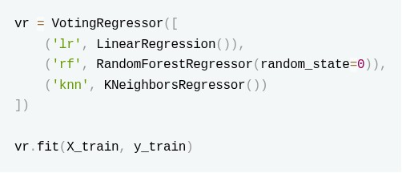
After the model is fit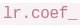
raises an error. Why?- VotingRegressor deletes the original estimator.
- VotingRegressor internally clones every estimator before fitting.
- LinearRegression does not store coefficients.
- VotingRegressor converts all models to RandomForest since it is the best model out of the 3 due to ensemble learning.
Which of the following parameters of a DecisionTreeClassifier in Sklearn can be adjusted if the model has a high varience?
- ccp_alpha
- random_state
- min_samples_split
- max_depth
Consider the following two ensemble regression architectures trained on the same dataset:
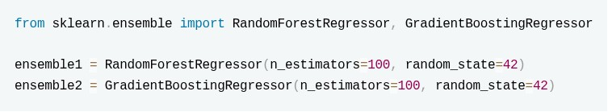
How do these two models differ in their output strategy to produce the final prediction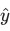
for a given test instance, and how does adding more estimators affect them?- ensemble1 computes a weighted sum of predictions where later trees have higher weights; ensemble2 takes a simple arithmetic mean of all trees.
- ensemble1 reduces variance by averaging independent predictions from 100 trees, meaning increasing n_estimators to 500 will ideally not cause overfitting.
- ensemble2 reduces bias sequentially, meaning increasing n_estimators to 500 carries no risk of overfitting.
- Both models output predictions by calculating the majority vote across the terminal leaf nodes of all individual base estimators.
Select all the false statements amongst the given statements:
- RandomForest uses sampling without replacement for bagging.
- Boosting reduces bias by sequentially training models
- Bagging reduces bias by training multiple models on different subsets of data and averaging their predictions.
- Boosting trains all base models independently in parallel.
Which of the following algorithms don't get impacted by feature scaling?
- LinearRegression
- KNN
- KMeans
- DecisionTree
For the RandomForestClassifier select the correct pair(s) of parameter(s) and their explanation(s).
- n_estimators – Number of trees in the RandomForestClassifier
- max_depth – Maximum depth allowed for each decision tree
- min_samples_leaf – Controls the maximum number of trees that will be created
- bootstrap – Sets the number of features used for splitting at each node
Which of the following is a hyper parameter?
- "intercept_" in LinearRegression
- "degree" in PolynomialFeatures
- "n_neighbors" in KNeighborsClassifier
- "max_depth" in DecisionTreeClassifier
Consider the following code snippet that trains a Decision Tree classifier using scikit-learn:
 A node in the trained decision tree is split only if both of the following conditions are satisfied: • The node contains at least min_samples_split samples. • Each child node created after the split contains at least min_samples_leaf samples. Assume node (N) is a non-leaf node being considered for splitting. In which of the following cases will the split at node (N) be allowed?
A node in the trained decision tree is split only if both of the following conditions are satisfied: • The node contains at least min_samples_split samples. • Each child node created after the split contains at least min_samples_leaf samples. Assume node (N) is a non-leaf node being considered for splitting. In which of the following cases will the split at node (N) be allowed?
A node in the trained decision tree is split only if both of the following conditions are satisfied: • The node contains at least min_samples_split samples. • Each child node created after the split contains at least min_samples_leaf samples. Assume node (N) is a non-leaf node being considered for splitting. In which of the following cases will the split at node (N) be allowed?- Node (N) contains 15 samples. After splitting, the left child has 9 samples and the right child has 6 samples.
- Node (N) contains 6 samples. After splitting, the left child has 4 samples and the right child has 2 samples.
- Node (N) contains 12 samples. After splitting, the left child has 3 samples and the right child has 9 samples.
- Node (N) contains 8 samples. After splitting, the left child has 4 samples and the right child has 4 samples.
Consider the following ensemble model built using VotingClassifier with voting='soft':
 How is the final prediction for a test sample obtained?
How is the final prediction for a test sample obtained?
How is the final prediction for a test sample obtained?- By selecting the most common predicted class.
- By averaging predicted class probabilities.
- By summing the predicted class labels.
- By choosing the most accurate classifier.
We use classification report to evaluate our classification model:
 Which of the following metrics are included in the classification report?
Which of the following metrics are included in the classification report?
Which of the following metrics are included in the classification report?- Accuracy
- Mean Squared Error
- F1 Score
- Cross Entropy Loss
- Recall
You are training a RandomForestRegressor on a dataset with 20 features and 10,000 samples. Consider the following code:
 Which of the following statements is TRUE about how this Random Forest model will behave?
Which of the following statements is TRUE about how this Random Forest model will behave?
Which of the following statements is TRUE about how this Random Forest model will behave?- With bootstrap=True, every tree sees the entire dataset, but the samples are shuffled randomly for each tree.
- The forest will use all 20 features for each split, but only 5 trees out of the 200 will be trained on bootstrap samples.
- Setting max_features=5 means only 5 trees out of 200 will use feature subsets, while the rest use all features.
- Each tree will consider only 5 randomly chosen features when looking for the best split at every node.
Select the correctly matched pairs of sklearn functions with the use of fit, fit_transform and transform.
- Learning the weights of logistic regression model on training data - fit_transform
- Creating a decision tree on the training data - fit
- fitting MinMaxScaler on test data - fit_transform
- fitting MinMaxScaler on train data - fit_transform
Given the following code using BaggingClassifier with KNeighborsClassifier as the base estimator:
 Which of the following statements is correct?
Which of the following statements is correct?
Which of the following statements is correct?- Above code uses bootstrapping to generate samples for each base classifier.
- model will be tested on out of the bags samples.
- Due to weights="distance", each base KNN classifier will treat all neighbors equally in terms of voting power.
- The ensemble will consist of 3 base KNN classifiers.
- None of these
Which of the following algorithms may get impacted by feature scaling?
- LinearRegression
- DecisionTree
- SVM
- NaiveBayes
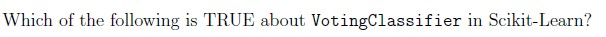
- It can only be used with classifiers that output probabilities.
- When voting=‘hard’, it chooses the class with the highest sum of predictedprobabilities.
- When voting=‘soft’, it averages the predicted probabilities and picks the classwith the highest probability.
- It cannot be used with Pipeline objects.
Which of the following is NOT a hyperparameter in machine learning?
- Learning rate in gradient descent
- Bias in a linear regression model
- Number of clusters in k-means
- Minimum leaf size in decision trees

- GaussianNB
- LogisticRegression
- SGDClassifier
- RandomForestClassifier
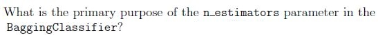
- It determines the number of features to select for each base model.
- It controls the number of base learners (models) to train in the ensemble.
- It decides the maximum number of samples to use in each base model.
- It ensures randomness in the sample selection for each base model.
Consider following parameter grid for regression with RandomForest:
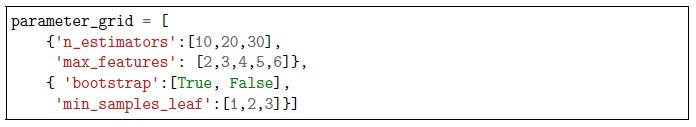
Consider following parameter grid for regression with RandomForest: How many unique combinations of hyperparameters are there in the above parameter grid?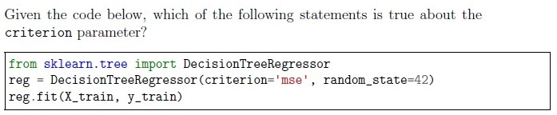
- It determines the function to measure the quality of a split.
- It specifies the number of features to consider when looking for the best split.
- It sets the strategy used to choose the split at each node.
- It controls whether to use the Gini impurity or entropy.
Consider below statements and choose the correct option: Statement1:The bagging technique combines multiple models trained on different subsets of data Statement2:The Boosting technique trains the model Parallelly, focusing on the error made by the other model.
- Statement1 is True, Statement2 is True
- Statement1 is True, Statement2 is False
- Statement1 is False, Statement2 is True
- Statement1 is False, Statement2 is False
Decision Trees are prone to:
- Low bias, low variance
- High bias, low variance
- Low bias, high variance
- High bias, high variance
Which of the following models are inherently multiclass models?
- Perceptron
- DecisionTreeClassifier
- KNeighborClassifier
- LogisticRegression
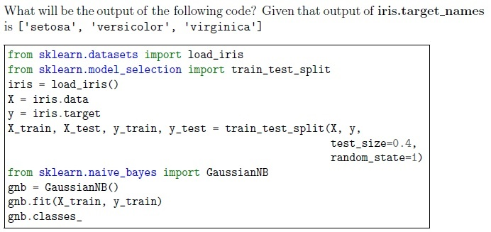
- [0, 1, 2]
- [0, 1]
- ['setosa', 'versicolor', 'virginica']
- ['setosa', 'versicolor’']
- None of these
You’re working on a dataset containing customer purchase data, and you want to segment the customers into distinct groups based on their purchasing behavior. Each data point represents a customer and includes features like “Total Amount Spent” and “Number of Items Purchased.” Which algorithm is suitable for this scenario?
- Linear Regression
- Decision Tree
- K-means Clustering
- Support Vector Machine
- None of these
Which of the following techniques are used in decision trees to make decisions or to measure the quality of a split while training the model?
- Entropy
- RoC Curve
- Cross Entropy
- Gini Impurity
Which of these may NOT help in handling overfitting in decision trees?
- Increasing the value of min_samples_split
- Increasing the value of the pruning parameter
- Increasing the value of min_samples_leaf
- Increasing the depth of the tree
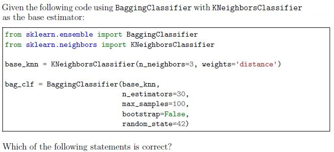
- Above code uses bootstrapping to generate samples for each base classifier.
- model will be tested on out of the bags samples.
- Due to weights=’distance’, each base KNN classifier will treat all neighborsequally in terms of voting power.
- The ensemble will consist of 3 base KNN classifiers.
- None of these
Which of the following observations warrant use of SGD model?
- The data set size is 1000 GB.
- The model has to be trained in non-iterative manner.
- The model must be a decision tree.
- The model must be a logistic regressor.
- None of these
Comprehension passage for this question
Based on the above data, answer the given subquestions.
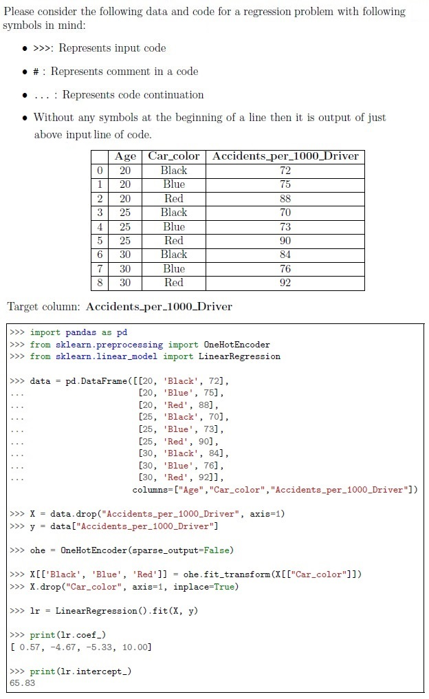
To improve the given Linear Regression model which of the following preprocessing step you suggest?
- OrdinalEncoder()
- DecisionTree()
- LabelEncoder()
- StandardScaler()
According to DecisionTreeClassifier parameters which of the following option will have least fitting(underfit) for the same data.
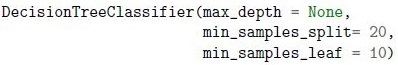
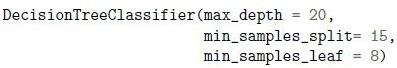
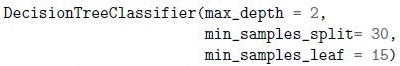
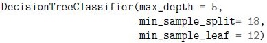
Which of the following are advantages of using ensemble methods in machine learning?
- Improved model performance
- Reduced overfitting
- Faster model training
- Simplicity of model interpretation
Suppose In a classification problem you want to use BaggingClassifier, which of the following estimator(s) could be used as base estimator in that?
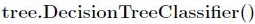
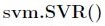
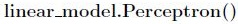
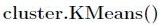
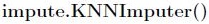
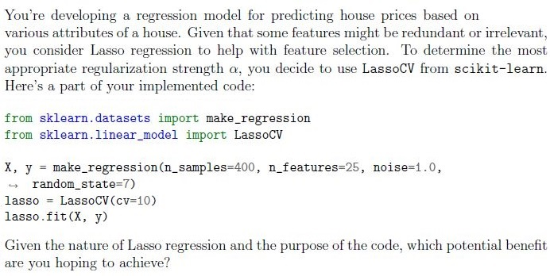
- Optimize the model’s complexity by automatically determining the best αthrough cross-validation.
- Reduce overfitting by incorporating 10-fold cross-validation during modelselection.
- Make predictions using an ensemble of 10 different Lasso models trained ondifferent subsets of the data.
- Maximize the number of features retained in the model, ensuring a complexmodel representation.

- MultinomialNB
- RandomForestRegressor
- LogisticRegressor
- SGDRegressor

- DecisionTreeClassifier
- RandomForestRegressor
- LogisticRegressor
- SGDRegressor
Consider the following statements about SGDClassifier: 1. It can be used to train a model on large dataset that doesn’t fit in main memory 2. It can emulate a KNN model 3. It can emulate a decision tree model 4. It can emulate a perceptron Choose the correction option(s)
- 1 and 4
- 1 and 2
- 2 and 3
- 3 and 4
Following is the code to tune the n_estimators parameter of a Bagging Classifier model.
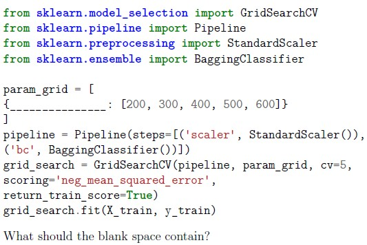
Following is the code to tune the n_estimators parameter of a Bagging Classifier model.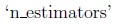
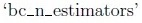
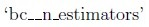
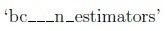
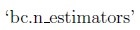
Consider the following code. How many DecisionTreeClassifier models will be trained internally?
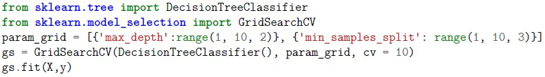
Consider the following code. How many DecisionTreeClassifier models will be trained internally?- 20
- 200
- 8
- 150
- 15
- 80
When a node is split further in a decision tree:
- It creates only two new children nodes always.
- It can create two or more new children nodes always.
- It depends on the cardinality of the categorical feature.
- It depends on the scale of the numerical feature.
Which of the following are hyper parameters in a decision tree?
- Number of features
- Number of minimum samples to split
- Height of the tree
- Diameter of the tree
Consider following statements regarding a decision tree model? 1. It is a parametric model. 2. It has a tendency to overfit if allowed to grow unconditionally. 3. It can be used for regression, classification and clustering problems. 4. It is one of the easiest machine learning models to interpret. 5. For classification problems, decision tree’s loss function is same as evaluation metric. Choose the option with all the correct statements:
- 2, 3
- 1, 3, 5
- 3, 5
- 2, 4
- 1, 3, 4
- 1, 2, 4
Lata wants to train a bagging regressor with following specifications: 1. Base estimator as linear regressor with default parameter values. 2. 80% of the data is used to create a bag of samples. 3. Create subsets of training set without replacement. 4. Take half the features when creating subsets of data. 5. Train the model on training set. 6. Print score on test set. Which of the following code blocks will correctly execute Lata’s task? [Note: Assume necessary imports and variables for training and test sets.]
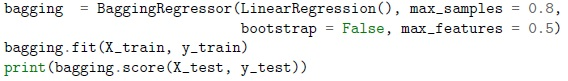
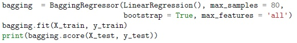
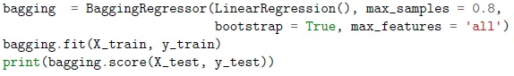
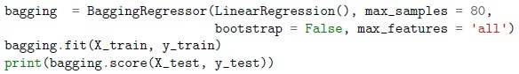
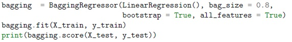
You have a binary classification problem to solve with following information: 1. All features are numircal. 2. The dataset has size of 80 GB. 3. The data has to be preprocessed. 4. After data preprocessing, train the model with gradient descent or its variations. Which of the following will perform the above task?
- Perform one hot encoding followed by training with LogisticRegression model(sklearn.linear_model).
- Perform standard scaling followed by asklearn.neighbors.KNeighborsClassifier model.
- Perform min-max scaling followed by a sklearn.tree.DecisionTreeClassifiermodel.
- Perform max-absolute scaling followed by asklearn.linear_model.SGDClassifier model.
Brajesh wants to tune hyper parameters of an AdaBoost model for a classification problem with following specifications: 1. Base estimator as Decision trees classifier with max_depth=1. 2. Number of estimators range from 30 to 40 (both inclusive) at the interval of 1. 3. Cross validation = 5. 4. Learning rate must vary between 0.2 to 2.0 (both inclusive) at the intervals of 0.2. 5. Train the best model on the entire training set. 6. Print score on test set. Which of the following code blocks will correctly execute Brajesh’s task? [Note: Assume necessary imports and variables for training and test sets.]


Consider following statements regarding a decision tree model: 1. It is a non-parametric model. 2. It has a tendency to underfit if allowed to grow unconditionally. 3. It can be used for regression and classification problems only, but not for clustering. 4. It is one of the most difficult machine learning models to interpret. 5. For regression problems, decision tree’s loss function and evaluation metric can be same. Choose the option with all the correct statements:
- 1, 3, 5
- 1, 3
- 3, 5
- 2, 4
- 1, 3, 4
- 1, 2, 4
When a node is split in a decision tree (in sklearn):
- It creates only two new children nodes always.
- It can create two or more new children nodes always.
- It depends on the cardinality of the categorical feature.
- It depends on the scale of the numerical feature.
Which of the following are hyper parameters in a decision tree in sklearn?
- Number of features
- Number of minimum samples to split
- Height of the tree
- Diameter of the tree
You have a regression problem to solve with following information: 1. All features are numerical. 2. The dataset has size of 40 GB. 3. The data has to be preprocessed. 4. After data preprocessing, train the model with gradient descent or its variations. Which of the following will perform the above task?
- Perform one hot encoding followed by training with LinearRegression model(from sklearn.linear_model).
- Perform standard scaling followed by training with KNeighborsRegressormodel (from sklearn.neighbors).
- Perform min-max scaling followed by training with DecisionTreeRegressormodel (from sklearn.tree).
- Perform min-max scaling followed by training with SGDRegressor model (fromsklearn.linear_model).
Rajesh wants to tune hyper parameters of an AdaBoost model for a classification problem with following specifications: 1. Base estimator as Decision trees classifier with max_depth=1. 2. Number of estimators range from 10 to 20 (both inclusive) at the interval of 1. 3. Cross validation =4. 4. Learning rate must vary between 0.1 to 1.0 (both inclusive) at the intervals of 0.1. 5. Train the best model on the entire training set. 6. Print score on test set. Which of the following code blocks will correctly execute Rajesh’s task? [Note: Assume necessary imports and variables for training and test sets.]


Asha wants to train a bagging classifier with following specifications: 1. Base estimator as k nearest neighbour classifier with default parameter values. 2. 70% of the data is used to create a bag of samples. 3. Create subsets of training set with replacement. 4. Take all features when bootstrapping. 5. Train the model on training set. 6. Print score on test set. Which of the following code blocks will correctly execute Asha’s task? [Note: Assume necessary imports and variables for training and test sets.]
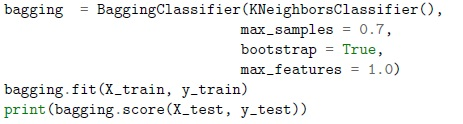
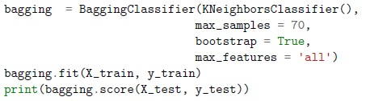
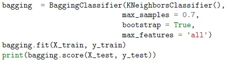
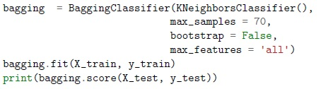
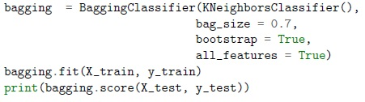
Consider the following block of code and mark all possible correct options.
 Consider the following block of code and mark all possible correct options.
Consider the following block of code and mark all possible correct options.
Consider the following block of code and mark all possible correct options. - Given model uses majority voting rule to predict class labels.
- Given model predicts the class labels based on the argmax of the sums of thepredicted probabilities.
- Setting flatten_transform =True with voting=’soft’ will flatten the output shapeof transform.
- None of these are correct
For the following block of code, we get the output as 0.9875. How would the output change if we decrease max depth value ?:
 For the following block of code, we get the output as 0.9875. How would the output change if we decrease max depth value ?:
For the following block of code, we get the output as 0.9875. How would the output change if we decrease max depth value ?:
For the following block of code, we get the output as 0.9875. How would the output change if we decrease max depth value ?: - Output score will definitely increase.
- Output score will definitely decrease.
- Output score may decrease or remain the same.
- Code will throw an error because max_depth can’t be less than 6.